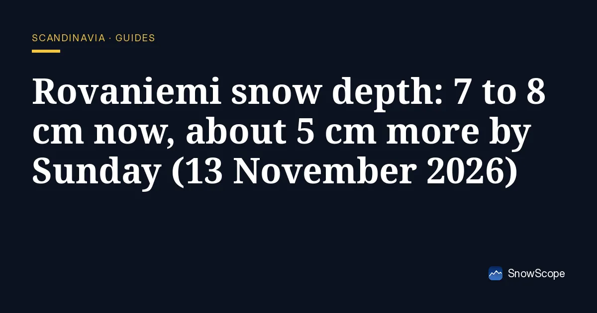
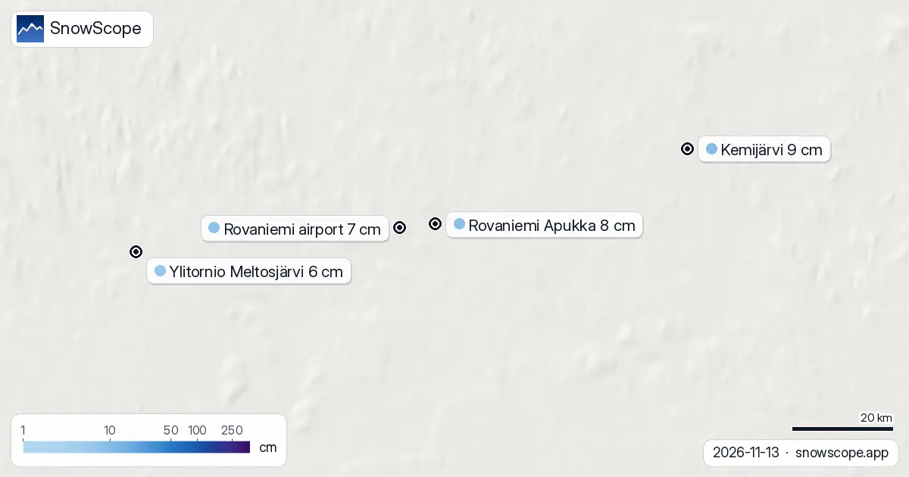

Rovaniemi snow depth: 7 to 8 cm now, about 5 cm more by Sunday (13 November 2026)
Rovaniemi is white, but only just. The airport station north of town measured 7 cm of snow on Friday morning and Apukka, to the east, 8 cm. The cover arrived on Tuesday and has grown a centimetre or two a day since. This weekend should add a few more.
See the live snow forecast for Rovaniemi in the SnowScope appSnow depth, powder alerts and the 3D map, free.
The week in numbers
On Monday the airport still had bare ground. Then 5 cm on Tuesday's reading, 7 cm today. Apukka followed the same path, from bare ground to 6 cm on Thursday and 8 cm now. Further out, Meltosjärvi in Ylitornio has 6 cm, Kemijärvi 9 cm and Ranua 3 cm.
Thin, but even: the whole Rovaniemi area is white, with no bare patches between the stations.

Normal for the Arctic Circle?
Slightly thin. Our snow history for the city covers 46 past winters, and 40 of them had snow on the ground on 13 November. The middle value for the date is 9 cm, with about 4 cm in a thin winter and 16 cm in a deep one. Half the winters had lasting snow already by 18 October, so this year started late.
Recent winters on this date: 8 cm, 4 cm, 26 cm, 2 cm and 8 cm. By 1 December Rovaniemi usually has about 22 cm, by mid-December about 30 cm and by mid-January about 48 cm.
The weekend: cold and snowy
Saturday brings about 3 cm of snow with temperatures between -8 °C and -3 °C. Sunday adds about 2 cm more, and the night before it is the coldest of the weekend, down to around -12 °C. Monday turns milder, near zero, with some wet snow or rain. Together, the two forecasts we read give about 5 cm of new snow over the weekend.
Tips for skiers
- Saturday and Sunday are good days for a first winter walk in the forest at Ounasvaara: cold, dry snow, short daylight, bring a headlamp.
- Fresh snow on not-yet-frozen rivers and bogs is a trap: stay on marked paths and off the ice.
- If you are coming for husky or reindeer activities, check with the operator: a cover of under 10 cm limits what can run.
More maps (external sites)
References and credits
- Finnish Meteorological Institute, open data (daily snow depth) en.ilmatieteenlaitos.fi/open-data
- Open-Meteo, weather forecast data (ECMWF and ICON models) open-meteo.com/
About these numbers
Snow depth today: measured at weather stations on the morning of 13 November 2026 (Finnish Meteorological Institute); a station reports the snow on its own small plot, so a few kilometres away and a hundred metres higher the ground can look different. Usual depth for the date: SnowScope snow history, 46 past winters (1980-81 to 2025-26), a model of the past at the city's height, not a station record. Weekend: two weather models (ECMWF IFS and DWD ICON, read through Open-Meteo), given as a range. Places and rules: the official pages listed below.
Cite this report
For research, teaching or the press: the numbers and charts are free to reuse under CC BY 4.0 with this citation.
SnowScope (2026), Rovaniemi snow depth: 7 to 8 cm now, about 5 cm more by Sunday (13 November 2026), https://snowscope.app/blog/en/2026/11/rovaniemi-snow-depth-13-november-2026.html, accessed 2026-11-13
SnowScope (Atlas Labs). (2026, November 13). Rovaniemi snow depth: 7 to 8 cm now, about 5 cm more by Sunday (13 November 2026). SnowScope snow reports. https://snowscope.app/blog/en/2026/11/rovaniemi-snow-depth-13-november-2026.html
BibTeX
@misc{snowscope2026rovaniemisnowdepth13nove,
author = {{SnowScope (Atlas Labs)}},
title = {Rovaniemi snow depth: 7 to 8 cm now, about 5 cm more by Sunday (13 November 2026)},
year = {2026},
month = nov,
howpublished = {\url{https://snowscope.app/blog/en/2026/11/rovaniemi-snow-depth-13-november-2026.html}},
note = {Published 2026-11-14 13:29 UTC; accessed 2026-11-13}
}· CC BY 4.0 · Methods, data and tools →
Follow Rovaniemi
Free: a message when fresh snow is coming, and the forecast every morning.
More snow reports

Big Sky, Montana, made easy to picture: 5,850 acres under Lone Peak, and snow that is about five times deeper near the top than at the base in 46 past winters.

Baqueira-Beret sits in the Val d'Aran, on the Atlantic side of the Pyrenees. What that means for its snow, tested with 46 past winters against La Molina, and when to go.

Banff Sunshine Village month by month: about 100 cm at mid-mountain in a usual March over 46 past winters, April deepest near the top, and a season into late May.